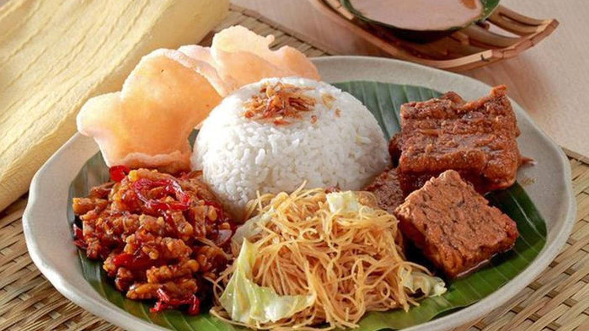

Menu Favorit

Nikmati kelezatan Nasi Uduk dengan resep warisan Mpok Homsah. Bumbu rempah pilihan, santan kental, dan lauk pauk yang melimpah.
Lihat Menu Kami
Nasi Uduk Mpok Homsah bukan sekadar hidangan, tetapi juga bagian dari tradisi dan kearifan lokal Betawi. Berawal dari dapur kecil keluarga, kami menyajikan nasi uduk yang dimasak dengan santan dan rempah-rempah pilihan seperti serai, daun salam, dan lengkuas untuk menghasilkan aroma harum serta rasa gurih yang khas. Dengan mempertahankan cara pengolahan tradisional dan resep turun-temurun, setiap porsi Nasi Uduk Mpok Homsah menghadirkan kehangatan masakan rumahan serta cita rasa autentik Betawi yang penuh kenikmatan.